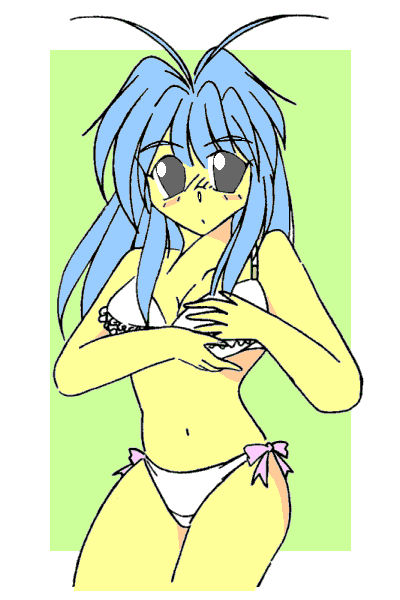
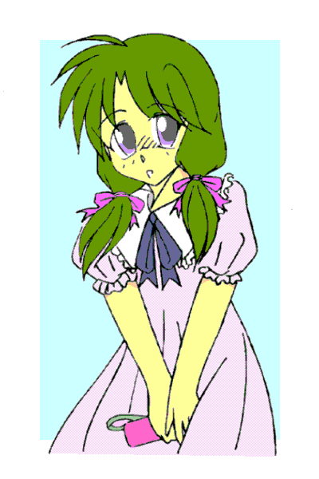

めいぷる！ ─ザ・インセクト─
第二章・ともだち
作：Ｋ．伊藤
───第一幕───
「や、やめろショッ○ーッ！！ ………………あ、あれ？」
悪の秘密組織に捕らわれ、バッタの改造人間にされる夢を見て飛び起きた。
「あー……うん。」
ＯＫ、夢だけど夢じゃない、あれが夢ならどんなに良かったことか。
今日は５月末の土曜日、現在、午前１０時。当然、葵の姿は既に無い、学校に行ってるはずだ。
外は良い天気で、睡眠は充分、体の調子もすこぶる良好、うん、良い朝だ。
「なのになんでかなぁ……泣きたい気分なのは。」
いや、原因はわかってるんだけどね……とほほ。
ま、朝から沈んでいても仕方ない、ベットから抜け出してパジャマのまま下へ行き、トイレで用を足し……。
「あぁ……もう居ないんだったけな、アイツ。」
あやうく床を汚すところだった、一度上げた便座を降ろして腰掛ける。
なんつーか、もの凄い喪失感なんスけど……アイツどんな姿してたっけ、失った我が分身に思いを馳せつつ用を足す。
「ふぅ……えーと…………うひゃぁ！？」
ビデ、なるものを初めて使ってみたが、なんというかコレは……慣れるのに時間がかかりそうだ。
トイレットペーパーを折りたたんで水気を取る……だけで良いんだよな？ 拡げて中まで拭くもんなのか？
……後で葵に聞いてみるか？ ……いや、どうやって聞けば良いんだこんな事っ。
あぁ、女の子ってめんどくさい……ひょっとして生理なんかもあったりするのだろうか、俺……。
落ち込みそうになったので、冷水で顔を洗ってスッキリする。
そのままリビングに行くと、テーブルの上には数枚のメモと分厚い本、真新しい携帯電話、それにサンドイッチがラップにかけられて置かれていた。
サンドイッチは葵が用意していってくれたのだろう、ありがたく頂く事にしよう。冷蔵庫からオレンジシュースを持ってきて席に座る。
「いただきます。」材料と生産者と制作者に、感謝を忘れずに……と。
サンドイッチをパクつきながらメモと本を手に取る、本は……新しい携帯の取り扱い説明書か、メモに目を通してみる。
「起きたか楓、新しい携帯は私からのプレゼントだよ、番号は変わったが、アドレスのメモリーは古い物のを入れておいた、まぁ大事に使うんだね。私は所用で出かけるよ、色々と手続きがあるんでね、夕食までに帰らなかったら、先に適当にすませてくれ。」
これはオフクロのメッセージか。
手続きねぇ……俺の、だろうな。次のメモに目を通す。
「お寝坊なお姉ちゃんへ
おはよ、葵は学校行きます。帰りにかなみちゃん連れてくるかも、都合悪いならメールしてね。お昼は私が作ります、その後で買い物行こうね。お姉ちゃん、女物の服とか下着持ってないもんね、私が選んであげるよ。お姉ちゃん、美人さんだからね、楽しみ。色々着替えようね（はぁと）」
……葵は俺が女になったのを面白がってるフシがある、と思うのは俺の被害妄想だろうか。
取り敢えず携帯を弄ってみる、新機種だが同じメーカーの物だった、操作にたいした違いはなさそうだ。元より俺は携帯の機能なんざ、通話とメールくらいしか使わない。説明書が読まれることは希だろう。
「タイトル：愛する妹へ
本文：サンドイッチありがとう、美味しかった。
かなみちゃんの件、了解、待ってるから連れておいで。……送信、と。」
早速メールを送ってみた、やはり説明書なんか読まなくても何とかなりそうだ。
部屋に戻って机の上に取説を放り、クローゼットを開ける。さて、何を着るか……色々とひっぱり出してみる。
あれこれ合わせてみるが何を着てもサイズが合わない、肩幅や腰回りは余るのに尻や胸がキツい。確かに服は必要なようだ、手持ちの服は選ぶほどの余地が無い。
結局ジーンズとＴシャツにデニムのジャケットを着込んだ、まぁ……おかしな格好じゃ、無いと思うが。
さて、葵達が来るまで何して時間潰そうか……あぁ、そうだ、アイツはどうしてるかな？ 階段を降りてリビングから庭へ、サンダル履きで納屋へ行く。
薄暗い納屋の中、久し振りに見る、愛車の姿。
HONDA NSR250R･SP/88年式･前期型……シリーズ中最も過激と言われた、今では絶滅に近い２ストクォーター。
オヤジが残していったバイクだ。
「綺麗にされてるな……。」
葵だろうか？ そう思って跨り、キーを捻る。ステップに足をかけ、キックペダルを踏み下ろした。
パラン、パラパラパラ……一発でかかる、NSR特有のアイドリング音。アクセルを開けば、呼応して回転数が上がる。
アクセルを捻る、戻す、捻る、戻す……タコメーターの針が踊り、狭い納屋に排気ガスが満ちていく。
クラッチを握りギアペダルを操作する、カキン、カキンと乾式クラッチが小気味良い音を立てて繋がった。
「誰が……？」
丸一年、納屋で放置されていたとは思えない。
ただでさえ気難しいレーサーレプリカで、しかも俺より年上のバイクなのだ。
しっかりメンテナンスしてなければ、こうはいかない筈。葵には無理だ、バイクの知識なんて皆無だろう……アイツだろうか。
「其処の女、何をしている、ソイツから降りろ、それは俺の親友のバイクだ。」
と、納屋の扉から声がした。
聞き覚えのある声、振り向けば見覚えのある姿。
あぁ、やっぱりコイツだったのか、メンテしてくれていたのは。
「大吾……。」
「……何故俺の名前を知っている？ 貴様、何者……な……楓！？ ……いや、まさか……お前、は。」
俺の親友で悪友、古風で男気に溢れた今時珍しいくらい硬派な奴、ちなみに愛車はTZR250後方排気。
信用も信頼も出来る男だ、コイツになら、今の俺の状況を話しても問題無い。
もし裏切られるならそれは、俺が裏切られる程度の価値しかない人間だった、それだけの事。
「俺だよ、楓だ、久し振り……だな。」
「馬鹿な事を、楓は死んだ……いや、そもそもアイツは男だ。貴様何者だ、楓の名を騙って何をしようとしている。」
「そりゃ一度は死んだがな、俺の母親のマッドサイエンティストっぷりを知らんわけじゃあるまい？」
「まさか、いや、だが……もし本物の楓なら、この質問に答えられるはずだ。」
「いいぞ、何でも聞け。」
「中学の時殺した担任の死体は何処に埋めた？ お前の母、茜さんの３サイズは？ 俺の３サイズは？」
「殺して無いし埋めてもないわっ！ 知るかよ、俺はマザコンか！？ 男の３サイズなんぞ知るかぁぁっ！！」
「そのツッコミ……間違いなく楓だ……｡｣
「俺＝ツッコミかよ！？」
「生きて、居たんだな……楓……。」
「大吾……？ お前……泣いて……？」
「楓……くっ……楓っ……。」
「大吾……。」
「楓が……あんなに可愛かった楓がっ……女なんぞにっ！！」
「男色っ！？」
そういやコイツ、女の子にモテる割に誰とも付き合おうとしなかったなぁ……。というか、俺、狙われていた？
「と、まぁ、冗談は置いといて……で、結局の所、どういう事なんだ？」
「あー……まぁ、話すと長い、茶でも入れるから、そっちで話そう。」
キーシリンダーを回しエンジンを停止させる、静かになった納屋を後にしてリビングに戻ると、葵とかなみちゃんが居た。
───第二幕───
「おう、おかえり葵、かなみちゃん、いらっしゃい、久し振りだね。」
「あ、ただいまお姉ちゃん、納屋に行ってたんだ。あれれ、大吾さんだ、いらっしゃいませ、今日もバイクを？」
「こんにちは葵、お邪魔するよ、あぁ、そのつもりだったんだが、納屋で楓とバッタリな。君はかなみという名か、俺は東雲大吾、まぁよろしく。」
「あ、え、えと、お久しぶりです楓さんっ、は、初めまして、東雲先輩っ、私、宮ノ森かなみ、ですっ、よよよよろしくお願いしますっ！」
４人がそれぞれ挨拶をする。ちなみに大吾は、えらく人見知りするタチで、初対面の相手にはやたら無愛想だ、「まぁよろしく」が付いただけでも奇跡に近い。最悪の場合だと、相手が名乗るまでひたすら無言を押し通す。
「大吾、かなみちゃん怯えてるだろ、その子は葵の親友だ、ちょっと内気だが健気な良い子だぞ。愛想良くしろとは言わないが、せめて睨むのはやめろ。」
「……わかった、楓がそう言うのならば、良い子なのだろうな。」
「わわわ、そんな楓さん、私はそんな良い子なんかじゃ、と、いうか、楓さん、その女装はいったいっ！？」
「話せば長い、まぁ待って、今状況を説明するから……茶でも飲みながら話そう。」
「あ、そんじゃ私、お昼作っちゃうねー？ 今日のお昼は葵特製ドライカレーです。大吾さんも食べるよね？」
「あぁ……じゃぁ、折角だし、頂いていくよ。」
「あ、葵ちゃん、私も手伝う。」
「ダメダメ、かなみちゃんは、お姉ちゃんの話を聞くことっ。」
パタパタとキッチンに去る葵、俺は大吾とかなみちゃんの前に緑茶を置く。
「さて……何処から話そうか……俺が目覚めた所から、かね。」
いくら何でも真実を語るわけには行くまい、オフクロが葵に説明したのと同じ内容の事を話す。
というか、真実の方が遙かに嘘っぽいんだよなぁ……。
「ふむ……災難だったな。」と、大吾。
「大変だったんですね……。」と、かなみちゃん。
俺は「まぁ、死ぬよりはマシさ。」と苦笑し、「そんな訳で、出来ればこれからも宜しく頼む。」と頭を下げた。
「頼まれる筋合いは無いな、俺にとってお前は友だ。たとえ宇宙人だったと言われても、それは変わらんさ。」
「そんな、あ、頭を上げて下さいっ、むしろ私の方がこれからもよろしくして欲しいくらいでっ！」
帰って来た二人の言葉が胸に染みた。
正直、不安だったんだ、こんな体になって、俺の大事な人たちに受け入れて貰えるかどうか、って。
あ、やばい、泣きそうだ、強がりも限界に近くなってる。
「二人とも……あ、ありがとう……お、俺……。」
「いやいやいや、感動の再会劇だったね、美しい友情だよ、私もホロリと来ちゃうけど、お昼の時間でーす。」
言葉に詰まった俺の目の前に、でん、と山盛りのドライカレーが置かれる。
「しんみりも良いけど、和気藹々の方がきっと素敵だよ。さ、今日の御飯は自信作だよ、食べて食べて！！」
そして、エプロン姿の葵が満面の笑みで、そう言った。
「…………だな、嬉しい時は笑うべきだ、楓。」
「あは、良い匂い……美味しそうですよ、楓さん、頂きましょう！」
「あぁ、うん、いただきます……くそぅ、カレー粉が目に染みらぁ……。」
葵の料理は相変わらず美味かった、ちょこっとしょっぱかったが。
───第三幕───
お昼を食べて、雑談しながら食後のお茶を楽しむ。
「なんとなくな……いつかまた、お前がアイツに乗って、現れそうな気がしていた。それにな、まぁ……俺には、わかるからな、そういうの。お前が死んだとは思っていなかった。」
大吾に俺のバイクをメンテしていた理由を尋ねると、そう答えた。
そういや大吾は普通とはちょっと違う人種だっけ、まぁ、葵やかなみちゃんの前で話す事じゃ無いな、また後で大吾にはもう少しちゃんと事情を説明しよう。
「……楓さん、そんなに甘党でしたっけ？ 確か、珈琲はブラック派だったような。」
「あー、何だかね、食べ物の好み変わっちゃったんだよねー、甘いモノ大好きよ、今の俺。」
珈琲に砂糖をどかどか入れている俺に、かなみちゃんが尋ねた。
……糖分多めに摂取しろってオフクロの指示だしな、ドライカレーじゃ糖分は余り取れないだろうし……しかし、かなみちゃん、そんな細かい事よく覚えてるもんだ。
……宮ノ森かなみちゃん、か……こうして改めて見ると、可愛い子だよなぁ。
一年という時間でも、葵や大吾はあまり変わらなかったが、かなみちゃんは結構変わったかな。
なんというか……女の子として魅力的になったな、顔も身体も……性格もかな？ 少し明るくなった気がする。
「……？ あ、あの、楓さん、私の顔が何か……？」
じっと見ていると、かなみちゃんが恥ずかしそうにもじもじしながら言った。
「ん、かなみちゃん、しばらく見ない間に可愛くなったなぁ……ってね。」
「あ、あぅ、そ、そんな……か、からかわないでくださいよぅ……。」
正直に言ってみたところ、顔を真っ赤に染めて俯いてしまった……その反応がまた、可愛いんだけどねぇ。
「ね、ね、ところでさ、明日、予定が無ければみんなで遊びに行こうよ。」
そんな雑談の中で、葵が思い立ったように提案した、そっか、明日は日曜だっけ。
「ん？ ……俺は別に構わないけど。」そう言って大吾とかなみちゃんを見る。
「俺も予定は無いが……。」と、大吾。
「私も、予定は特に……。」と、かなみちゃん。
「あは、じゃぁ決まり！ 明日の１２時に駅前に集合っ！ 行き先は未定っ！ ブラブラするのも楽しいよ、ね？」
「そうだな、それも良いな、友達と遊ぶなんて一年ぶりだよ、楽しみだ。」
大吾もかなみちゃんも、積極的に友達を作るタイプじゃない、まして異性の友達などは。
この機に二人を友達にしてしまおう、それが葵の魂胆だろう。自分自身も遊びたい、というのも間違い無いだろうけど。
……まぁともかく、その考えには賛成だ。
…………あぁ、わかってる、わかってるさ、本当は俺の為なんだろ。
「わかった、１２時に駅前だな？」
そう言って大吾が席を立つ。
「じゃ、俺は今日はこれで、処理しなきゃいけない事があるんでな。」
「あ、私もそろそろ帰ります、今日は久し振りにパパが家にいるの。」
かなみちゃんも席を立った、もう３時か、結構話し込んでたなぁ。
「そっか、じゃぁな、二人とも、久し振りに会えて嬉しかったよ。……と、待て、大吾、携帯の番号変わったんだ、今かける……ＯＫ、それが新しい番号だ。」
「……よし、覚えた。」
「いや登録しろよ。」
「あの、か、楓さん、あの、よ、よろしければ、私にも、その……番号、を。」
「あ、うん、じゃぁちょっと待って、今書く……ほい、かなみちゃん、それ俺の番号ね。」
「あ、ありがとうございますっ……。」
「ははは、番号くらいで大げさな、あとでかけてね、俺の携帯にも登録しておくから。」
「……ねぇ、お姉ちゃん。」
「ん？ なんだ、葵。」
「『俺』はやっぱ変だって、一見可憐な美少女なんだから余計に……｡」
「…………変、か？」
「「「変。」」」
「ハッピーアイスクリームっ！？」
お前ら明日俺にアイスクリーム奢れ。
───第四幕───
「ねぇ、葵……まだ着替えるの……？」
「勿論さ当然だよ当たり前だねっ……じゃ、次はこれっ！！」
「お願い、もっとカジュアルなのかシックなのにして……。」
土曜の午後も夕方近く、駅前の某デパートで、俺は葵の着せ替え人形になっていた。
「んー、似合うと思うんだけどなぁ、じゃぁこっち。そんで次はこれ。」
「ねぇ、葵、私もう疲れたよ……ちょっと休憩しようよ。」
「はいはい、もうちょっとしたらねー♪」
言っておくが、女性に目覚めて口調を改めている……のでは断じて無い。
男言葉を使えばペナルティにつぶつぶ入りドリアンドリンク一本、という誓約を無理矢理させられたのだ。
なんでこの街はこんな物売ってるんだと切に思う。此処までで既に３本胃に入れた。
ナンパを追い払う時使った一回くらいは見逃してくれても良いと思う、俺の妹は鬼だ。
買い物に出かけてまず最初に行ったのは靴屋だった。
家に俺の足に合うサイズの靴がないのだからしょうがない、まぁ、靴は別に恥ずかしい事も無く、葵のオススメのままに適当に買って済んだのだが、それ以降が試練の連続だった。
何が試練って……次に行った下着売り場が、まず入る所から試練だった。
いや、確かに今の俺は女の子なのだケド、それでも、心は男なわけで。葵に任せるから適当に買ってきてくれ、と頼んだのだが。
「駄目だよ、下はともかく、ブラはちゃんとサイズ計らないと。」と葵は言うのだ。
そんなにサイズが重要なの？ と言うと、葵は俺を階段に連れて行って、「とにかく駆け上がって駆け下りてみて。」と言った。
言われたとおり駆け上がり駆け下りて……まさしく痛感した、確かにブラジャーは重要だ。揺れて走りにくいわ気になるわ……何より、乳首が擦れて痛い……。
「……というわけで、女性のバストというのはデリケートなのですよお姉ちゃん、垂れたりするのヤでしょ？ 走ってみて、揺れると邪魔で痛いってのわかったでしょ？ ちゃんとしたサイズのブラジャーはかくも重要なのですよー。」
「ブラジャー要らなさそうな胸の癖に、ずいぶん詳し……ひっ！？」
「 な に か 言 っ た ？ 」
にっこりと笑う葵の背後に、ゴゴゴゴとかドドドドって効果音が見えた。
「な、なんでもありません！ なにも言ってません！殺さないでっ！！」
「だよね？ 何も言ってないよね？ さぁ、大人しく着いてきなさいお姉ちゃん。ちなみに逃げたら炒める。」
「炒めるって何を！？」
「さぁ？ そりゃ炒めてからのお楽しみ？ 気になるなら逃げてみれば？ うふ、うふふふふふ。」
「や、やだなぁ、葵ってば、私が可愛い妹置いて逃げるわけ無いじゃない？ あは、あはははは。」
敵前逃亡は死刑らしい、覚悟を決めて店内に連れ込まれ、そのまま個室に閉じ込められて、剥かれた。
怯える俺に、紐状の物（メジャー）を持った葵が迫る、パンツ（トランクス）一枚で怯える俺。
胸を覆う腕を降ろせ、と葵が命令した。羞恥に震える少女（俺）は、涙目で震える腕を降ろし、誰にも見せた事がなかった胸を……いや、昨日の時点でオフクロと葵に見られてたか。
謀られ……いや、計られた後はサイズの違いに嫉妬されて、結局は揉み倒される羽目になったのだが。ずるい、と言われても俺にどうしろっちゅうねん。
ちなみに、試着室で騒いでたもんだから、店員さんに怒られた。しかも、見られた。
……トランクス一丁で妹に胸を揉まれている姿を。
顔から火が出るんじゃないかって程恥ずかしかった……しかも、よく考えればジーンズまで脱ぐ必要は無かったんだよ、あぁ、もう。
にっこり笑って、ピンクのリボンが飾られた可愛いショーツを勧めてくる店員さんを、まともに見る事も出来ず。言われるまま勧められるままに買ってしまい……。
いや、俺も健全な少年だったわけで、そりゃ、可愛いパンティは好きですよ、好きだけどさ、それは可愛い女の子が履いてるのを見るのが好きなのであって、決して自分で履きたい訳ではっ！！

葵はずっと笑いを堪えて喋ってくれないし……くそ、葵め……今夜風呂入ってるときに電気消してやるぞ畜生……。
「お姉ちゃん、着替えたー？」
「うわぁっ！？ あ、葵っ！！ 開けるなら声かけてからっ！！」
「うーん……。そこは、きゃぁっ！？ って言ってくれないと……。」
「いいから！ いいから早くカーテン閉じてっ！！」
「はーい。」
「なんで中に入ってくるのっ！？」
まぁそんなこんなで今はあちこちのブティックを連れ回され、前述の通り着せ替え人形になっている次第である。
「あ、あれも可愛いなぁ、お姉ちゃん、次はあれ行ってみよー！！」
葵は非常に楽しそうだ。
俺を試着室に押し込んで、次から次に服を持ってきては着せようとする。こっちは女の子の服なんて不慣れだというのに……。
「うふふ、良くお似合いですよ、お客様……あぁ、なんて可愛らしい……。」
おかげで、なんか怪しい店員さんが俺に付きっきりで。
この店員さん、着替えるのを手伝ってくれるのは良いのだが、なんか必要以上に俺に寄り添ってくる。
「あ、あの、もう少し、離れて……。」
「はぁはぁ、お客様……どうですか、此処とか此処が、キツかったりしませんか……？」
「ひっ！？ ひゃぁっ！？」
「あぁ……お客様……その声も可愛らしい……ねぇお客様、オルレアンの噂……ってご存じですか？……うふふ。」
「知りません！！ そんな都市伝説知りません！！ 葵！！ あおいーっ！！」
「ん？ なぁに、お姉ちゃん。」
試着室のカーテンから顔だけ出して葵を呼ぶ、やばい、この店はやばい、俺はまだ行方不明にはなりたくないっ！！
「あ、葵、あのね、もうかなりの荷物になってるから、もう一度宅配してもらいに行こ？ ね？ ね？ 行こ？」
「あぁ……そだね、じゃ、店員さーん、これとこれ、あとこっち……それと、今お姉ちゃんが着てる奴、お会計してくださーい。」
「あぁ……お客様……残念です……。」
怪しい店員が俺から離れ、お会計の方へ歩いて行く。……今ポケットにしまったの、注射器に見えたけど……気のせいだよな？ うん、きっと気のせいだ、そういう事にしておこう。
会計で葵がお金を払い、俺が品物とレシートを受け取……店員さんに、ぎゅっと手を握られた。
「有り難う御座いました、またのご来店をお待ちしてますわ……うふふ、たっぷりサービスしますから、必ずまた来てくださいね？ 出来れば今度はお一人で……。」
「あ、は、はい、また機会が在れば？ じゃ、さ、さよならっ！！」
たぶんそんな機会は二度と来ない、手を振り解いて逃げ出した。
レシートの裏に携帯電話番号とメールアドレスらしきものが書かれていたが、見なかった事にする。
え、えーと……かかった金額は……うわ……高っ……。
「……お、女の子って、お金かかるのね……。」
「んー……そだねぇ、まぁ、男の子に比べればね。」
宅配カウンターに向かいながら、葵と話をする。
「だからかなぁ、女の子がバーゲンとか安売り大好きなのって。」
「あー、それはちょっとあるかも。」
「下着なんて、あんなちっちゃい布で凄い金額だったもんなぁ……。」
「ん？ あー、あれね、あれは勝負下着だよ、普段履くのは安売り品に決まってるじゃない。」
「勝負って、俺になんの勝負をしろと！？」
「はい、ドリアンドリンク４本目ー。」
「う……うげぷ……あ、あとで家に帰ってからにして……？」
「あはは、まぁ良いけど。んとね、勝負っても色々とあるからさ。ほら、健康診断の日とかは、流石にちょっと良いの履いたりして。」
「あー……なるほどね。というか、今日のお金ってどうしてるの、もうかなりの金額行ってるでしょ。」
「それはほら、お姉ちゃんの死亡保険とか、事故の示談金とかで、億単位入ってるし。」
「億！？」
「うん、でもまぁ、治療とか手続きとか裏工作で、かなり使ってるみたいだけどね。」
「あ、そうか……というか、我が家の家計状況ってかなり謎だものね……｡」
「だね、うちの通帳見たことある？ もの凄い金額が増えたり減ったりしてるの。」
まぁ、名刺の肩書きに『天才』と入れる母親だしなぁ、特許使用料とかだけでも結構な金額らしいのだが。飽きもせず懲りもせず色々と研究してるし、金の流れなんてどうなってるのやら。
「通帳かぁ、見たこと無いなぁ、まぁ、食べていければ文句ないけど……あ、すいません、これ宅配お願いします。」
宅配カウンターに荷物を預け、宅配伝票に住所と氏名を書き込む。
「……よし、と。……じゃ、休憩しよ休憩っ！ 葵っ！ 私あんみつ食べたい！ クリームあんみつ！！」
「はいはい、じゃぁ、飲食フロア行こっか。」
「やたっ♪」
「あ、お姉ちゃん、今の笑顔、すごく可愛かった……な、なんか複雑かも、あはは。」
そう言われても、俺も複雑なんですけど。
───第五幕───
「そういや、葵は自分の服買わなくて良いのか？」
「良いの？ で止めるべきだったね、５本目ー。」
「い、今のも！？ ちょっとくらいサービスしても良いでしょ！？」
甘味処でクリームあんみつを堪能した後、お茶を啜りながら雑談モードだ。甘い物で幸せ気分になり、気を抜いていた、くそう。
「んー、じゃぁ、女の子っぽく懇願してくれたらひとつサービス。」
「……あ、葵ちゃん、意地悪しないでよぅ……ひ、ひどいよ……。」
「あ、かなみちゃんの真似だね？ まぁ、可愛かったのは確かだからサービスしたげる。」
「あ、ありがと……。」
……神様、俺、なんか悪いことしましたか？ 今年の初詣は、行けなっかったんだから仕方ないと思いますが、いかがでしょうか。
「私の買い物は良いよ、今日はお姉ちゃんの日だし、そう言ってお母さんのカード預かってるし。」
「一着二着くらいなら、バレないと思うけどな。」
「かもね、でも、やっぱりダメだよ。それに、どうしても欲しかったら言えば買ってくれると思うし、だから、今日は見てるだけ。大丈夫、私も十分楽しんでるから、服を見ながらあれこれコーディネイト考えたりしてね。」
「女の子はウィンドショピングでも楽しい、とは言うけれど……｡」
「嫌いだって子はあまり居ないね。」
「女の子ってよくわかんない……はぁ……先行き不安……｡」
「大丈夫、大丈夫、習うより倣って慣れろってね。私もついてるんだから、マリー・セレストに乗ったつもりで。」
「縁起悪っ！ そりゃ沈没はしなかった船だけど！！」
「さて、そろそろ買い物の続きに行こっか。」
「えー……まだ買うの……？」
「うん、今度はバーゲン品とか、安売りとか見よ？ 普段着に高い服着るわけにもいかないでしょ。というか、お姉ちゃん自発的に欲しい服とか無いの？」
「バイクに乗れるような服と靴が欲しい、スカートで乗るわけにもいかないし。」
「ん。じゃぁ、その辺も見繕ってあげる。さぁ、行こっか。」
「うぇーい……。」
「ドリアンドリンク……。」
「うん、行こっか、葵っ。ほらほら早く、早くぅ♪」
「あはは♪」
もうヤケである、俺も男だ、こうなったら今日一日、可愛く女の子してやろうじゃないか。
───第六幕───
「っつ……あぁぁぁ〜……。」
あの後、さらに三時間ほど連れ回され、最後にデパ地下で夕食の総菜を買って帰宅した。
まぁ、ＣＤショップだの本屋だのに寄ったりもしたので、服だけを見たわけじゃないのだが。
「はーぁ……極楽ごくらくぅ……♪」
まぁ、とにかく疲れた、今日一日だけで、どれだけ女の子たる知識を覚えさせられた事か。
ちなみにあの後、ドリアンドリンクをさらに２本飲まされて、メーカーに呪いの念を送ったりもした、トラウマになったらどうしてくれるんだ、妹よ。
……とはいえ、感謝しなければならないだろうな、葵が居なかったら、俺一人で色々とやらなくちゃならん。
「は、びばのんのん♪」
ちなみに、今は夕食後の入浴中。
風呂上がりには、チョコミントアイスが待っている、デパ地下で葵にねだって買って貰った。
薄々感づいていたけど、どうもこの体は糖分をやたら欲するようだ、甘い物が大好物になってしまった。
「ま、女の子らしいっちゃらしいから、いいのかな。」
「お姉ちゃーん、シャンプーとトリートメント、私の使って良いからねー？」
「んー、ありがとー。」
「良ければ一緒に入って、髪の毛のお手入れとか教えようかー？」
「お願い、それは勘弁して……。」
というか、これ厳密には髪の毛じゃないしな。
明日は葵と大吾とかなみちゃんと、遊びに行く約束だ。
「生きてりゃ明日は良いことあるさ、ってね……本当だ。」
自然と顔がにやける、それなのに目元が熱くなる。湯船に顔をつけた。
葵が居て、大吾が居て、かなみちゃんが居て。明日も楽しい一日なのは確定だな。
───幕間・宮ノ森かなみ───
今日は、朝から葵ちゃんの機嫌が良かった。
まぁ、葵ちゃんの機嫌が悪い日ってのは珍しいんだけど。
「どうしたの？」と聞くと、一言、「帰ってきたんだよ。」と答えた。
葵ちゃんが「帰ってきた」と言うなら、あの人しか居ないだろう。
楓さん、葵ちゃんのお兄さん。
とても優しい人、とても強い人、私の憧れの人。
私の名前は、宮ノ森かなみ、高校二年生の１６歳。
葵ちゃんとはもう、小学校からのお付き合い。
先天性の心臓疾患、ちっちゃな頃から病気がち、人と付き合うのが苦手、クラスでも浮いた存在。
４年生の時同じクラスになった葵ちゃんは、そんな私に、持ち前の天真爛漫さで近寄ってきてくれた。
明るくて元気で可愛い葵ちゃん、私の理想の女の子。こんな女の子になりたいと、ずっと思ってた。
葵ちゃんを通じてクラスにも溶け込めるようになって、私も少しは明るくなれた、と思う。
そんなある日の事、近所の公園で、私はいわゆる『悪ガキ』に泣かされてしまう。
たぶん、今にして思えば、葵ちゃんの近くに居た私が疎ましかったんだろう。
子供の頃の葵ちゃんはワンパクで、男の子にも人気があったから。
葵ちゃんにしてみれば、『女の子』になる過程がちょうどあの頃だったのかな。
急速に男の子から離れ、女の子になっていく葵ちゃん、その頃、ちょうど近くに居た私。
いじめられた理由はそんな所だろう。
それを助けてくれたのが楓さんだった。
泥だらけで、あちこち擦りむいて、泣きながら、それでも５人を相手に一歩も引かずに。
偶然通りかかったお巡りさんが仲裁してくれるまで、私をかばい続けてくれた。
そして泣きながら、ごめんなさい、しか言えない私に、楓さんはこう言ったのだ。
「謝るな、お前は悪いことしてないだろ、そういう時は、ありがとうだ。」
今度は泣きながら、ありがとうしか言えなくなって。
「いい、当然の事をしたまでだ、俺は正義の味方だからな。」
正義の味方、ヒーロー、葵ちゃんがよく言っていた、「お兄ちゃんは私のヒーローなんだよ。」と。
私のヒーローにも、なってくれるのだろうか、そう聞くと。
「勿論さ当然だね当たり前だぜ、妹の友達といえば、俺の妹も同然！」
子供っぽいな、と思った。でも、すごく格好良かった。とても眩しく見えた。
初恋、だったんだと思う。
それからずっと葵ちゃんと友達で、親友と呼べるくらい親しくなって。
そうやって楓さんを知る機会も増え、知れば知るほど好きになって。
とても幸せで、あの兄妹の傍に居るのが、とても嬉しくて。
中学も高校も、あの二人と同じ学校を選んで……。
そして、高校１年の６月、忘れられないあの日がやって来る。
あの時、鈍くさい私が、教室に忘れ物をしたりしなければ。
いや、そもそも、兄妹の約束に割り込もうとさえしなければ。
あの時、私の方が葵ちゃんの近くに居たのに、全然近くに居たのに。
血の海の中で横たわる楓さん、楓さんにすがりついて泣き喚く葵ちゃん。
目の前が真っ暗になった、信じられなかった、信じたくなかった。
なんて事になってしまったのだろう、なんて事をしてしまったのだろう。
私が居なければ、私が代わりに死ねば、私が、私が、私が！！
好きだった、大好きだった、あの二人は、とても大事な存在だったのに！！
兄を殺して、妹を悲しませて、それなのに私は、のうのうと病院で治療を受けていて。
死んでしまいたかった、消えてしまいたかった。
お見舞いに来てくれる葵ちゃんに、会わせる顔がなかった。
それなのに、自分で死ぬ勇気も出せなかった。
私はなんて卑怯で愚劣で嫌らしい人間なのだろう。
だから、病気が悪化しているが、今のままでは、手術に耐えられる体力が無いと聞いても。
「あぁ、これで消えられるんだな。」という安心感しか無かった。
なのに、葵ちゃんが「実はお兄ちゃんは生きている。」と言う。
私は、どうすれば良いのかわからなくなった。消えてしまいたいのは、変わらないのだけど。
でも、その前に一言、一言だけでもいいから、楓さんに謝っておきたかった。
手紙も書いてみた、録音も考えた、どれもピンと来なくて、気が付いてしまった。
私は、ただもう一度楓さんに会いたいのだ、厚顔無恥にも、楓さんの顔が見たいのだ。
死にたく、無いのだ。
腹は決まった。生きる努力をしよう、そして生き残れたら、あの二人に全て伝えよう。
その上で、あの二人がもし許してくれるなら、残りの人生全てをあの二人に捧げよう。
その頃には、病気の進行は手遅れ寸前……いや、手遅れだった。
でも、生きる努力をすると決めた、だから、危険な賭にも乗った。
最新の非合法遺伝子科学療法、０．１％に満たない遺伝子適合率、その賭には取り敢えず勝った。
遺伝子さえ適合すれば８０％弱の回復率、ただし、残りの２０％強で何が起こるかわからない。
体だけ回復して脳が目覚めないこともありうる。回復した瞬間に急速に老化して死ぬかもしれない。
全ての記憶を失う可能性、心身に重度の障害が残る可能性、カタチを失い肉塊に成り果てる可能性。
「まぁ、成功しても何らかの後遺症は覚悟の治療法だね。」と彼女は言った。
普通に手術した場合は、「私なら１０％、この病院の腕利きで７％。」だと言う。
「無理には勧めない、あくまで方法の一つ、親とよく相談して決めることさ。」
彼女はそう言ったが、私の心はもう決まっていた。
あの兄妹の母親、志藤茜の研究成果なら、たとえ死んでも恨みのあろう筈も無い。
一応は両親にも相談した、二人とも「どんな姿になってでも生きていて欲しい。」と言ってくれた。
そして、私は体内にプラナリアの遺伝子を取り込む。
効果は劇的だった、術後二週間で私は健康な肉体を手に入れる。
プラナリアの遺伝子は恐ろしいほど私の遺伝子と融合した。そう、恐ろしいほどに。
目立つところでは肉体の変化……プラナリアは雌雄同体で、その、つまり、私は、あの。
男の子の機能、つまり、あれ、が………あぅ。
ほ、他にも、異常なまでの回復力、多少の怪我ならたちどころに治ってしまう。
けどそれ故、外科手術で男性機能の切り離しも不可能……切り離しても回復してしまうらしい。
そして、超能力のようなもの、見えない壁、バリヤーのようなものを作り出す力。
遺伝子適合率を上げるために、カタツムリの遺伝子をブレンドした影響かもしれない、そうだ。
…………よりにもよって、カタツムリも雌雄同体……。
ひょっとして、アメフラシやミミズの遺伝子も混ざってたりするんじゃなかろうか……｡
まぁ、被害妄想だろうな、それに実際、健康になれた、生き延びられたのだ。
おそらくは超能力も、あの時に大切な存在を守れなかった、自分自身がキッカケだろうと思う。
感謝はいくらしても足りず、文句の出ようはずもない。
こうして私は楓さんより先に健康になり、楓さんを待ちわびて。
「今日の帰りに、家来る？」と葵ちゃんが聞いた時には、「行くっ！」と即答した。
そして、約一年ぶりに会った楓さんは、美少女になっていた。
……葵ちゃん、ブラジャーの選び方とか、胸に関する事をやたら聞いてくると思ったら……これか。
───幕間・宮ノ森かなみ・その２───
「はぁ……。」
ベッドに腰掛けて携帯電話の液晶画面を眺めながら、４度目のため息。かれこれ１時間ほどこうしてる。
液晶画面に映るのは、登録したばかりの「志藤 楓」の名前と携帯番号。
「かけるなら、早い時間じゃないと、迷惑なのに……。」

枕元に置いてある目覚まし時計が、もうすぐ１０時だって教えてくれる。まだ起きてるとは思うけど、葵ちゃんの事だ、楓さんは相当に引っ張り回されただろう。疲れていたら、早めに寝てしまうかもしれない。
後でかけてね、と言っていたし、かける理由はそれだけでも十分だろう。けど、何を話したら良いのか、事故の時の謝罪？ 好きでしたの告白？ 謝罪は会ってちゃんとしたいし、女の子になった楓さんに好きでした、はタイミングが悪すぎる。
「だいたい、こんな、女でも男でもない私なんか……。」
ぼふん、とベットに寝転がる、目を閉じて楓さんの顔を思い浮かべる。
私だって年頃の少女だったんだ、楓さんに抱きしめられて、優しいキスをしてもらう想像くらいしたし、夢の中では、もっともっと大胆なこともしでかした。
「ん……あ……はぁ……。」
あ……いけない、だめ、私、また想像の中で楓さんを汚そうとしている。だめ、だめ、私はあの二人の傍に居られればそれでいいの、あの二人の傍で、笑ってる二人を見るのが幸せなの。
「はぁ……はぁ……あっ……っ。」
でも、いけない想像が、止まらない、楓さんの手で抱きしめられたい、楓さんの言葉で愛されたい、楓さんの唇で、私の唇を……。
「はい、もしもし。」
「あ、ひゅあ！？」
携帯電話から突然に楓さんの声が聞こえて、素っ頓狂な声をあげてしまった。
「………もしもし？ どちらさまー？」
「あ、あわわわわわっ！ こ、こんばんわ、か、かなみっ、宮ノ森かなみでひゅっ！！」
声が裏返った、どうやら携帯電話を握りしめて、通話ボタンを押してしまったらしい。
うう……恥ずかしい……。
「あ、かなみちゃんかー、そかそか、かけてくれたんだ。」
「は、はいっ、か、かけちゃいましたっ、夜分遅く申し訳ありませんっ！！」
「遅くって……まだ１０時ちょっとじゃない、あ、かなみちゃんは早寝早起きタイプかな？」
「は、いえ、そんな事はないと思いますけど。」
ドキドキが止まらない、落ち着け、落ち着け私、まずは何でもない世間話を───。
「あ、今は平気ですか？ 楓さん何かしてませんでしたか？」
「ん、大丈夫だよ。今さっきお風呂出たトコ、下着姿でうろついて、葵にこっぴどく怒られたよ。」
お風呂、楓さんの下着姿、楓さんの火照った体に、雫が流れ、て───。
「あぁぁぁぁ……っ！！」
「もしもし？ どうしたの、かなみちゃん？」
「い、いえっ、いえっ、何でもないです何でもないです！」
うわ、どうしよ、どうしよ、これ、男の子って、興奮するとこうなるのは知ってたけど、うわわ。
「あ、あした、明日！ 楽しみです！」
「あ、うん、私も楽しみだよ、そうだ、明日はかなみちゃん研究しよっかな。」
「けけけけけ研究っ！？ わたわた、私を、研究っ！？」
研究、研究されちゃうっ！？
楓さんの手が、私の服を無理矢理引き裂いて、それで、私の身体の秘密も暴かれちゃって、楓さんも一瞬驚くんだけど、すぐに、イケナイ子だね、とか、言われちゃって、それで、やめて、やめてって懇願しても、楓さんはやめてくれなくて、たっぷりと研究を……！？
「うん、今後の参考にね、かなみちゃん、いかにも女の子ってカンジで可愛いし。葵も可愛いんだけど、どうしても子供っぽい所が……もしもし、かなみちゃん？」
「ははははははいっ！ どうぞっ！ どうぞたっぷり研究して下さい！！」
「かなみちゃんかなみちゃん、落ち着いて、落ち着いて、はい深呼吸、大きく息を吸ってー。」
「すーっ………。」
「吸ってー、吸ってー、吸って、はい、もっと吸ってー。」
「すーっ、すーっ、すーっ、すぅぅぅぅ………っふぐはぁっ！！ 破裂しちゃいますよっ！！」
「あはは、ごめんごめん、でも落ち着いたでしょ？」
「あ、はぁ、それは……まぁ……。」
ドキドキしてるし、興奮もしてるけど、少し落ち着いた。暴走した感情に理解が追いついた感じ。
「そういや、かなみちゃん、今は激しい運動も平気なんだっけ？」
激しい運動、ベットの上で……って、いい加減お莫迦な妄想は止めなさい、私。
「あ、はい、すっかり健康体ですよ、鈍くさいのは相変わらずですけど。」
「そかそか、じゃぁ、明日は体を動かす遊びも平気だね、良かった。鈍くさいのは、ただ身体を動かすことに慣れてないからじゃない？ 慣れればきっと色々出来るよ。ドジっ子なのは先天性だろーけど。」
「あ、はい、そうですね……自転車に乗れるようになりたいな、とか思いますけど……って、楓さん意地悪です、ひどいです、そりゃ、ドジですけど……。」
気を揉んでいたのが莫迦みたいだ、なんだ、普通にお喋り出来てるじゃないか、私。
楽しい、嬉しい、おちょくられたり、ちょっと意地悪な事言われたり、それでも、楓さんがそれで楽しいなら、私も幸せだ。時間を忘れてお喋りしてしまう、あぁ、やっぱり私は、この人が好きなんだ。
「あ、ごめん、バッテリー切れそうだ、ロクに充電してなかったんだっけ。」
突然、楓さんの方からピーっ、と電子音が数回、私の幸せな時間を打ち切る、無粋なチャイム。
「あ、いえ、もう１時間近くお喋りしてますし、それではまた明日。おやすみなさい、楓さん。」
「あ、ホントだ……もうこんな時間か、じゃね、また明日、おやすみ、かなみちゃん。」
電話が切れる、もう何も聞こえてこないスピーカー、喋っても電波を送らない携帯電話。
「楓さん……好きです……大好きです……。」
好きでいることくらい、神様だって許してくれるよね？
───幕間・志藤葵───
「っあ！！」
目が覚めた、また見てしまった、暗い穴の中、蠢く虫、幽霊の怨嗟の声の夢。
「お、お兄ちゃん、お兄ちゃん。」
壁を叩く、怖い、怖いよ、電気消して寝るんじゃなかった、部屋の隅が怖い、カーテンの向こうが怖い、天井が怖い。
こん、こん。とノックが帰ってきた、居る、この向こうにお兄ちゃんが居る。
身体の震えは、それで収まってくれた。でも、怖い、ベットの下に虫がいるような気がする、カーテンの向こうに誰かが立っている気がする、何かが居るような気がして天井を見られない。
「いいよね、いいよね？ そっち行っても、いいよね？」
ベッドを抜け出す、ただドアを見て、部屋を出る、小走りでお兄ちゃんの部屋に向かう。
違う、今はお姉ちゃんだ、１６にもなってお兄ちゃんと寝るのは異常かも知れないけど、お姉ちゃんと一緒に寝るのなら、別におかしくない。そう、私たちは仲の良い姉妹、だから、一緒に寝るのも別におかしくない。
ノックもしないでお姉ちゃんの部屋に入る、月明かりを頼りにお姉ちゃんのベッドへ向かい、お姉ちゃんの身体を揺らす。
「お姉ちゃん、お姉ちゃん。」
「ん……葵……？」
「怖い夢みたの、怖い夢、みたの。」
「ん……そっか、おいで。」
お姉ちゃんが布団を上げて迎え入れてくれる、私は急いで中に潜り込む。
「ふぁ……葵は、甘えん坊だねぇ……。」
お姉ちゃんの腕の中に収まる、あったかい、守られてる気がする、ううん、気のせいじゃなく、守ってもらっている。お姉ちゃんの腕の中、此処が私の居場所だという安心感。私のお姉ちゃん、私の大切な人。
「うん……葵は、甘えん坊なの……だから、ぎゅってして……。」
抱きしめて貰う、お姉ちゃんの胸、柔らかくてあったかい。遠い昔、こんな風に誰かに抱かれて寝たような気がする、お母さんかな、でも、うちのお母さん胸無いしなぁ。
目を閉じる、私の子守歌、お姉ちゃんの寝息と、心臓の鼓動の音……。
「……あれ？」
お姉ちゃんの胸に顔を埋めて、ふにふにする、あれ？ あれ？ 心臓動いてないよ？ え？ え？
「うぅん……葵、くすぐったい……さ、もうおやふみ……お姉ちゃんもねみゅい……。」
「あ、うん、ごめんねお姉ちゃん……おやすみなさい……。」
……これってつまり、心臓の音聞こえないくらいバストあるってこと、なのかな？
羨ましいなぁ、私なんてぺたんこなのに、ちょっと分けて欲しいよ。
んー、でも、まぁいいか……柔らかくて気持ちいいし。
男の子がおっぱい大好きなの、ちょっとわかるかも、しんない。
「ん……おやすみ……あおい……。」
額にキスしてくれた、懐かしい、何年ぶりだろう、朝までぐっすり眠れるおまじない。
「……あふ。」
もう大丈夫、これで怖い夢も見ないで眠れる、おやすみ、お姉ちゃん。
ありがとう、だいすきだよ。
□ 感想はこちらに □